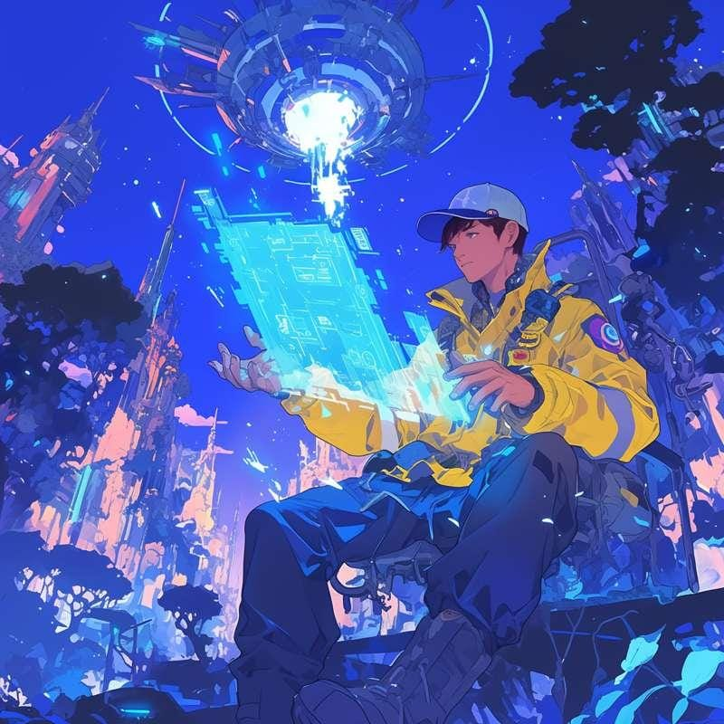

👤 1. Alter Ego
Aiden, Seorang remaja yang kreatif, bijak dan mempunyai minat mendalam terhadap sains, teknologi serta reka cipta.
Kenali adiwira rekaan yang mendapat inspirasi daripada semangat inovasi sosial dan inovasi akar umbi Yayasan Inovasi Malaysia.
Aiden merupakan seorang pencipta muda yang percaya bahawa setiap masalah mempunyai penyelesaian melalui kreativiti, ilmu dan inovasi. Dia melambangkan generasi muda Malaysia yang berani mencipta sesuatu yang baharu demi membantu masyarakat dan membina masa depan yang lebih baik.

Watak dan kuasa ini ialah rekaan untuk aktiviti Kelab STEM.
Aiden, Seorang remaja yang kreatif, bijak dan mempunyai minat mendalam terhadap sains, teknologi serta reka cipta.
Mendapat kuasa daripada sebuah ciptaan prototaip pintar yang dibangunkan melalui gabungan kreativiti, ilmu sains dan teknologi inovasi.
Idea-to-Reality (Penjelmaan Idea). Berupaya menukarkan idea dan lakaran kepada model ciptaan 3D serta prototaip teknologi yang boleh membantu menyelesaikan masalah masyarakat.
INNO-FORGE (Pemancar Inovasi Pintar) — Peranti penciptaan mudah alih yang menghasilkan hologram reka bentuk 3D dan membantu membina prototaip berdasarkan idea pengguna.
Had Sumber dan Ketepatan. Setiap ciptaan memerlukan bahan mentah, tenaga dan pengujian. Tidak semua reka bentuk hologram boleh terus berfungsi sebagai produk sebenar tanpa pembinaan dan penambahbaikan.
"Imagine, Create, Innovate."Maksud: Bayangkan, Cipta, Berinovasi.
Yayasan Inovasi Malaysia (YIM) ialah yayasan/agensi pembangunan inovasi sosial dan akar umbi di bawah Kementerian Sains, Teknologi dan Inovasi (MOSTI). YIM ditubuhkan pada 20 Oktober 2008.
Maklumat YIM diringkaskan daripada laman rasmi YIM. Watak InnoRex dan kuasanya ialah rekaan, bukan watak atau program rasmi YIM.